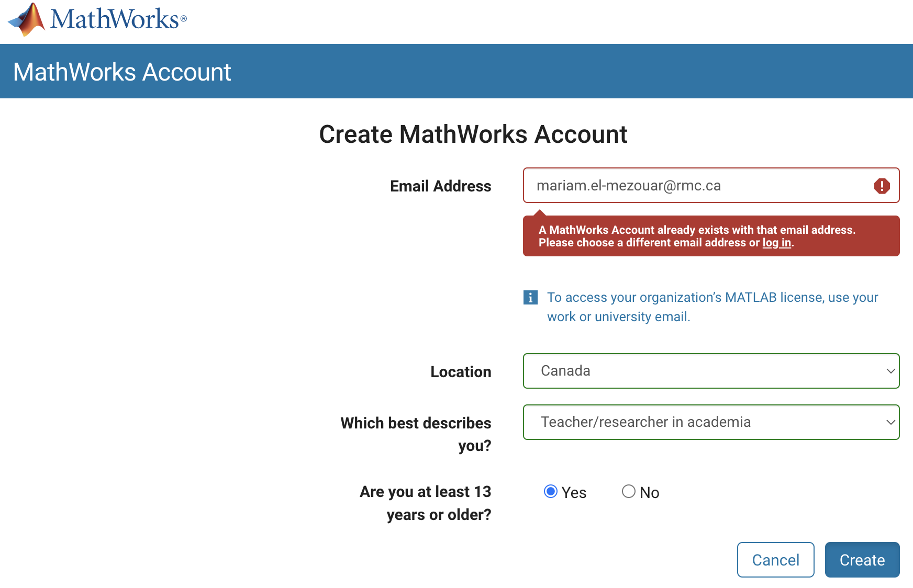
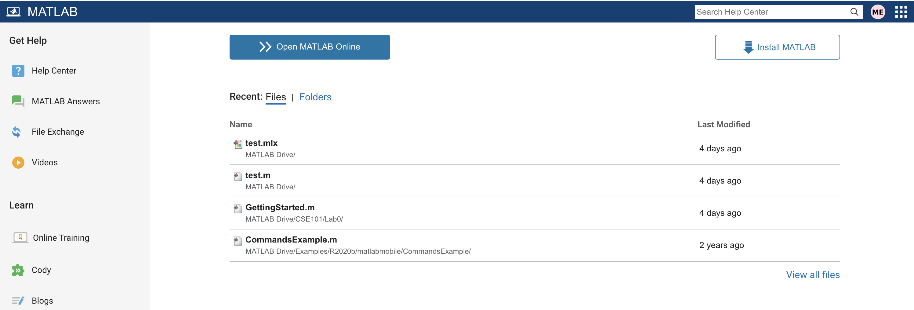
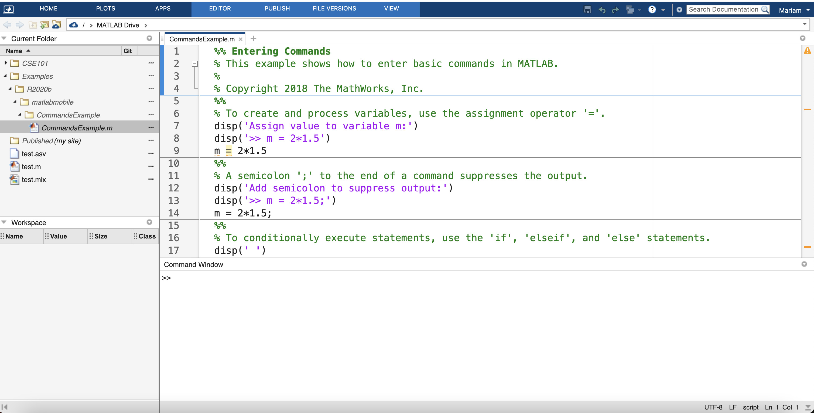
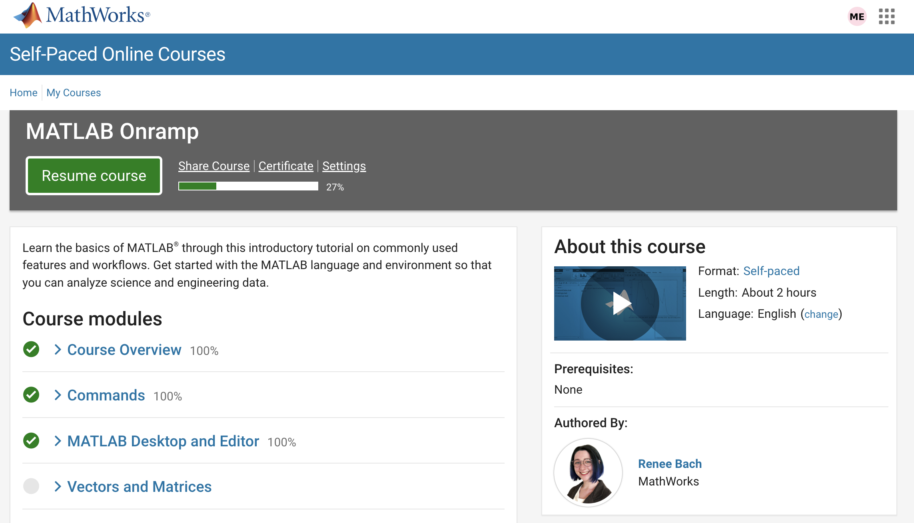

Lab 0: Getting setup
CSE101 Fall 2022
Introduction
During this lab, you will learn to setup your Matlab environment, as well as learn some basics of using Matlab
Objectives
The objective of this lab is to:
- Create MathWorks accounts to access both Matlab online and the Matlab installer.
- Learn basic Matlab commands.
- Get familiar with the Matlab interface.
Tasks
Creation of a Mathworks account
- Click here to create your Mathworks account
- Fill the required fields. Make sure you use your RMC email with the domain rmc.ca only (see image below).

Setting up the Matlab environment:
There are a few ways that you can use to access Matlab. In today's lab, you need to make sure that you are able to access Matlab using at least one of them.
- Accessing Matlab online: This task can be performed on the computer lab or your personal computer.
- Make sure you are signed in the Mathworks account created in the step above.
- Access the matlab page here
- Click on the blue button that says "Open Matlab Online" as seen in the image below

- After a few seconds of loading, you should now be able to see a Matlab editor that looks like the image below. You are not required to do anything further at this point. The different components of this window will be explored in a later task.

- Installing Matlab on your personal computers: This task can only performed on your personal computers
- Again, make sure you are signed in the Mathworks account created in the step above.
- Again, access the matlab page here
- This time click on the button that says "Install Matlab" and follow the installation steps
- When the installation is complete, launch Matlab in the same manner as other applications on your computer.
- The Matlab window should be faily similar to the Matlab online window. You are done with this step.
- Accesing Matlab on the computer labs in Currie Hall: The installation of Matlab in the computer labs is still ongoing. An email will be sent you when completed.
A gentle introduction to Matlab
In this task, you will complete the three first modules of this online training. This requires you to be logged in your MathWorks account.
After you complete the first three modules, your window should look like the following image. If it does, congratulations! you have completed your first Matlab lab. At this point, you can call your instructor to show them your completed tasks.

Copyright © Mariam El Mezouar 2022